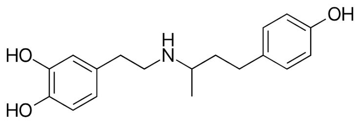
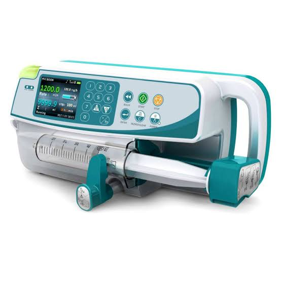

100% pemberian
Dosis perintah dan dosis aktual akan menuju nilai yang sama setelah transien pump yang singkat.
Ubah target pengendali, batas dosis, dan kondisi pump, kemudian amati dampaknya dari dosis perintah menuju dosis aktual, konsentrasi plasma, exposure, dan hemodinamika.
VISUALISASI 3D
RESPONS DINAMIS
AKTIVITAS LISTRIK JANTUNG

OBAT
Dobutamine merupakan obat inotropik yang digunakan untuk meningkatkan kemampuan kontraksi jantung. Pada simulator ini, dobutamine diberikan melalui infusion pump dan dimodelkan sebagai input farmakologis yang memengaruhi respons sistem kardiovaskular.
Meningkatkan kontraktilitas ventrikel sehingga stroke volume dan cardiac output dapat meningkat.
Efek obat terutama direpresentasikan melalui perubahan end-systolic elastance (Ees).
Dobutamine diberikan secara kontinu melalui infusion pump dengan laju dalam µg/kg/min.

AKTUATOR
Infusion pump berfungsi sebagai aktuator pada sistem kontrol. Perangkat ini menerima perintah dosis dari pengendali dan memberikan dobutamine dengan laju infus yang terkontrol.
Nilai laju infus yang diminta oleh pengendali PID.
Laju infus aktual yang diberikan oleh pump setelah memperhitungkan dinamika aktuator.
Simulator dapat merepresentasikan normal pemberian, partial pemberian, occlusion, dan over-pemberian 150%.
PENJELASAN MODEL
Simulator merepresentasikan pompa ventrikel kiri manusia dan cardiac output sistemik menggunakan lumped-parameter model. Efek dobutamine direpresentasikan melalui kontraktilitas ventrikel, beban arteri, dan volume pengisian.
Nilai baseline merepresentasikan model ventrikel kiri dewasa yang terinspirasi HFrEF/DCM. BP/MAP merupakan estimasi untuk tampilan yang diturunkan dari pendekatan sederhana resistansi/compliance sistemik; keduanya bukan target pengendali.
MODEL OBAT
z = 1.00 berarti exposure referensi yang berhubungan dengan kondisi referensi 5 µg/kg/min; nilai ini bukan ambang toksisitas klinis. Persamaan respons jantung dibatasi hingga z = 1.50 untuk membatasi ekstrapolasi. Over-pemberian (150%) hanya dimasukkan sebagai skenario failure aktuator untuk evaluasi sistem kontrol.
TEKNIK KONTROL
Sistem kontrol closed-loop mengatur cardiac output dengan menyesuaikan laju infus dobutamine melalui infusion pump.
Linearisasi lokal di sekitar baseline HFrEF
Regulasi feedback cardiac output
Pengendali terus membandingkan cardiac output terukur dengan target yang diinginkan. Ketika CO berada di bawah target, PID meningkatkan perintah infus. Konsentrasi dobutamine kemudian meningkat, kontraktilitas ventrikel bertambah, dan cardiac output ikut meningkat.
Gunakan perintah pengendali yang sama, kemudian ubah hanya kondisi pump. Perbedaan antara perintah dan pemberian membuat lokasi failure terlihat sebelum menjelaskan respons fisiologis downstream.
Dosis perintah dan dosis aktual akan menuju nilai yang sama setelah transien pump yang singkat.
Pengendali dapat meningkatkan perintah, tetapi pemberian aktual tetap dikurangi oleh α = 0.5.
Dosis aktual menuju nol, Cp menurun, dan exposure kembali menuju baseline.
Delivery aktual melebihi perintah sehingga Cp dan z dapat meningkat di atas kondisi referensi.
Hanya untuk penggunaan edukasional. Ini bukan kalkulator dosis, rekomendasi terapi, maupun sistem pendukung keputusan klinis.